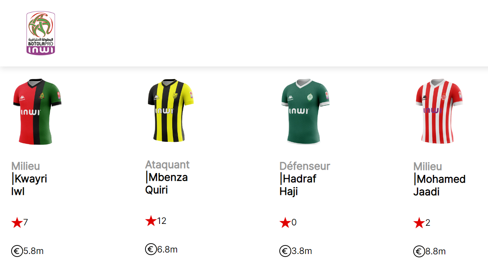

Introduction à React.js
- MON
- 2023-2024
- temps 2
- Omar Salame
React.js est l'une des bibliothèques JavaScript front-end les plus populaires pour la création d'interfaces utilisateur. Après avoir acquis les bases du HTML, du CSS et de JavaScript dans mon dernier MON, j'ai constaté que j'avais besoin de quelque chose de plus avancé pour travailler sur mon projet de football fantastique. C'est pourquoi j'ai choisi React.js pour développer la partie front-end.
Niveau : Intermédiaire Prérequis : Une connaissance en JavaScript, HTML et CSS
Table des matières
Introduction
React.js est une bibliothèque JavaScript front-end qui s'est imposée comme l'un des outils les plus populaires pour la création d'interfaces utilisateur dynamiques et réactives. Conçu et maintenu par Facebook, React offre une approche efficace pour construire des applications web interactives et évolutives. L'une des caractéristiques clés de React est sa capacité à construire des interfaces utilisateur modulaires, rendant le développement d'applications plus efficace et plus facile à maintenir.
J'ai choisis de développer des compétences en React.js à travers le cours React Course - Beginner's Tutorial for React JavaScript Library [2022].
Les bases de React.js
Pour s'initier a React ce cours utilise plusieurs tuto, organisés selon une progression graduée en termes de complexité et de fonctionnalités. Commencant par explorer les composants qui représentent des éléments autonomes d'une interface utilisateur, permettant de décomposer une application en morceaux modulaires. Puis comprendre le JSX (JavaScript XML) une syntaxe étroitement liée à XML/HTML, pour décrire la structure des composants de manière déclarative.
// Exemple de JSX
const element = <h1>Bonjour, React !</h1>;On commence par créer une page simple avec deux composants Header et Main. qui intègre deux composants, à savoir Header et Main. Le composant Header englobe une barre de navigation, et le composant Main comporte un titre accompagné d'une liste non ordonnée.
Maintenant que je me suis familiarisé avec ces notions basiques de React, il est temps de mettre en place une application React. Pour cela il faut executer cette commande dans le terminal pour créer et ce déplacer dans le répertoire créé:
npx create-react-app nom-du-projet
cd nom-du-projetEt puis pour lancer l'application il faut exécuter:
npm startUne fois le projet React est créé, on trouve une structure de base qui ressemble à ceci:
nom-du-projet/
|-- src/
| |-- index.js
| |-- App.js
| |-- ...
|-- public/
| |-- index.html
| |-- ...
|-- package.json
|-- ...-
'src/' : Contient les fichiers source de ton application React, y compris le fichier principal 'index.js' et le composant principal 'App.js'.
-
'public/' : Contient le fichier HTML principal (index.html) ainsi que d'autres fichiers statiques comme les images.
-
'package.json' : Fichier de configuration de ton projet, qui inclut les dépendances et les scripts npm.
Props
Une fois que l'infrastructure de base de ton application React est en place, il est crucial de comprendre le concept de "props" (propriétés). Les props sont un mécanisme essentiel dans React qui permet de transmettre des données d'un composant parent à un composant enfant. Cela facilite la communication entre les différents composants de ton application.
En React, chaque composant peut accepter des props en tant que paramètres. Ces props sont définies dans le composant parent et peuvent être passées aux composants enfants pour influencer leur comportement ou affichage. Les props sont immuables, ce qui signifie qu'une fois qu'elles sont définies, elles ne peuvent pas être modifiées par le composant qui les reçoit.
Résultats
J'ai consacré du temps à explorer cette fonctionnalité, car elle m'a offert une certaine souplesse dans le processus de développement, évitant ainsi la nécessité de coder en dur chaque élément de la page. Je peux simplement créer une fonction telle que celle-ci :
import React from "react";
import Star from "../images/star.png";
import Euro from "../images/euro.png";
export default function Joueurs(props){
return(
<div className="card">
<img src={props.img} alt="maillot" className="card--img"/>
<h3><span className="gray">{props.pos}</span> <span className="bold">|</span>{props.nom}</h3>
<div className="info-group">
<img src={Star} alt="star" className="icon--img"/>
<p>{props.note}</p>
</div>
<div className="info-group">
<img src={Euro} alt="prix" className="icon--img"/>
<p>{props.prix}</p>
</div>
</div>
)
}Et en integrant les données je peux avoir ce résultat: 